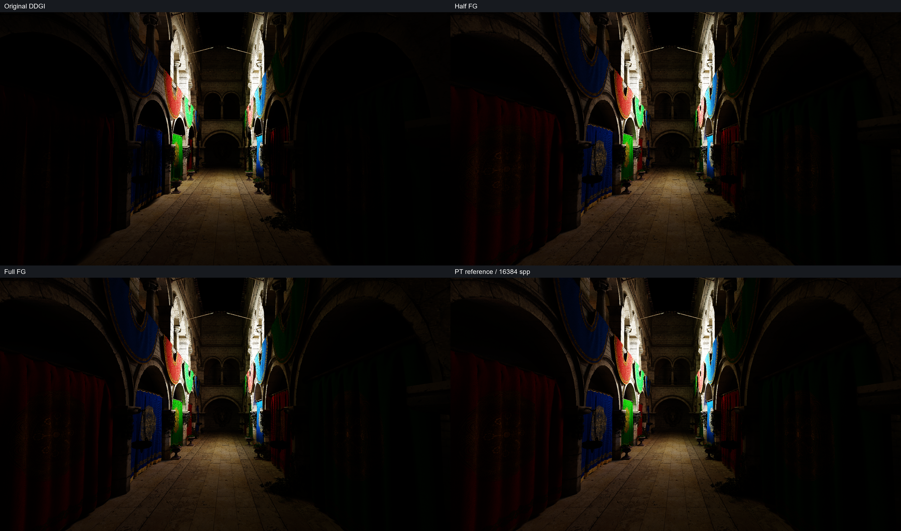
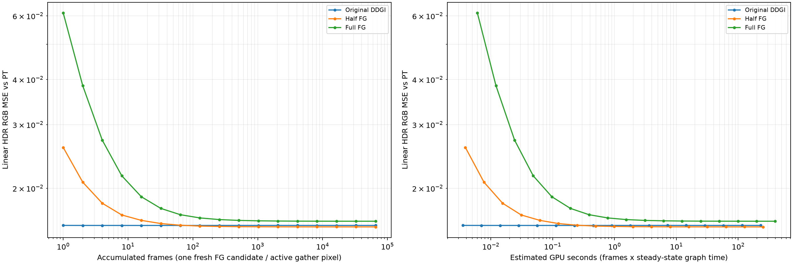
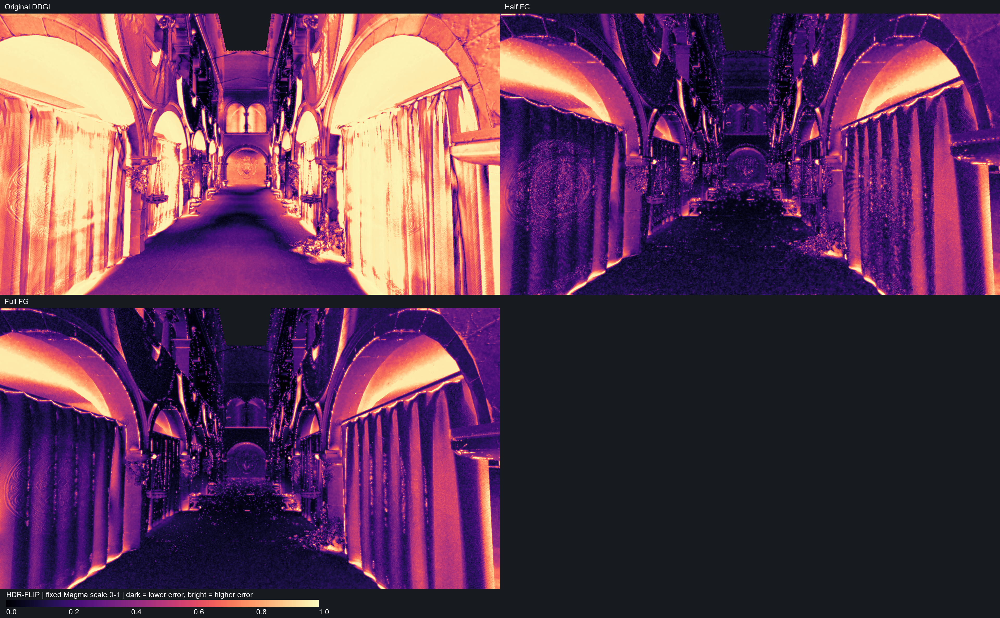
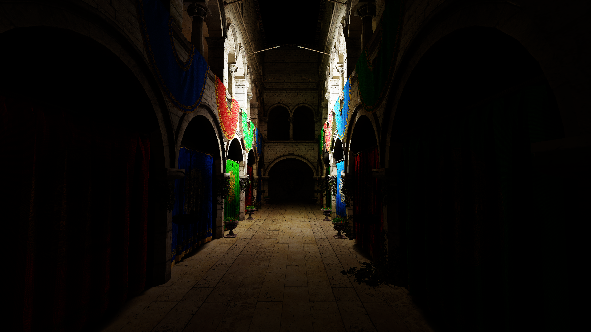
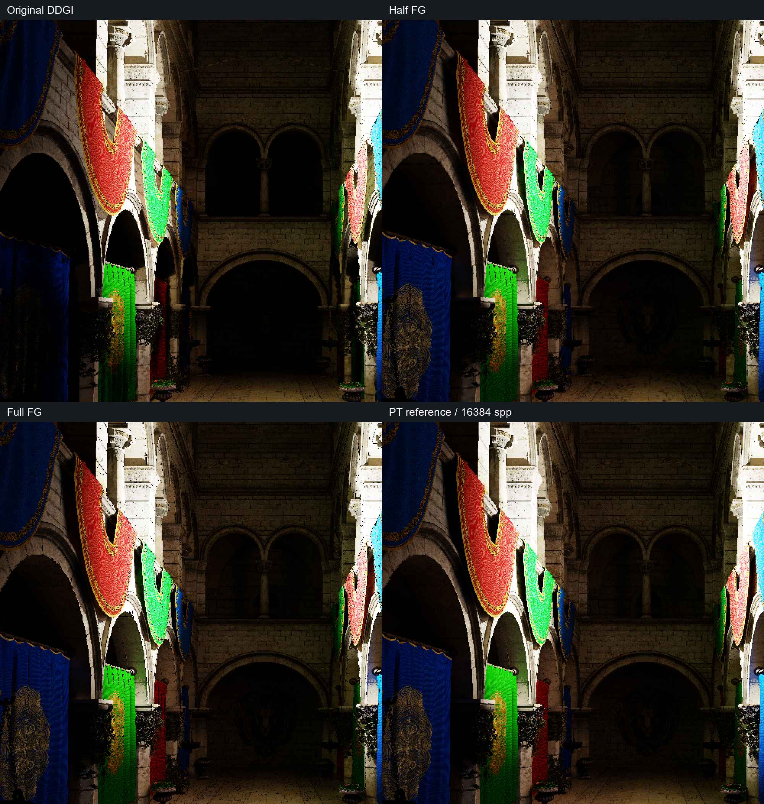

2026-11-19 新实验，原生 1920×1080。三个方案与 PT Reference 均从当前 SponzaLambert 场景重新渲染。ReSTIR、NRD、RTXDI 和 WRC 全部关闭。镜头固定，使用 Accumulate 静态累积；图像代表长时间平均后的结果，不代表实时单帧画质。
本场景下，FG 对 HDR-FLIP 的改善明显，但线性 MSE 改善很小，全分辨率 FG 的 MSE 略高于原始 DDGI，不能概括为所有指标都改善。按 PT 亮度排序，最亮的 10% 像素贡献了约 98.3%～99.9% 的 MSE；暗部照明改善对绝对平方误差的影响很小。HDR-FLIP 在统一的多曝光范围内评估，还会强调暗部差异。半／全分辨率也不能只按最终 MSE 判断优劣，半分辨率包含空间平滑。

沿用启动器的 Sponza 相机与照明：相机 (-9,1.6,0) 看向 (8,2.5,0)，24 mm frame height / 18 mm focal length；点光源 (0,4,0)，RGB intensity=(600,600,600)，使用项目的 Test Harness 点光衰减。25 个材质均为 PBRTDiffuseMaterial，BRDF=ρ/π；保留原颜色、法线贴图和 alpha 裁剪，不包含原镜面／金属项。
DDGI 网格 24×12×16=4608 probes，自动覆盖场景范围，每 probe 256 rays，hysteresis=0.97，normal/view bias 均为最小 probe 间距的 0.05 倍。三组均先预热 8192 帧，再清空累积并运行 65536 帧，期间 probe 持续更新。半分辨率 FG 为 960×540，从每个 2×2 块左上像素发射，jitter 关闭；全分辨率 FG 为 1920×1080。所有有效采样位置每帧至多一根漫反射 FG 射线。累积使用 SingleCompensated，避免长时间累积的浮点误差。
PT 每帧 8 spp，最大 31 次表面／漫反射反弹，NEE+MIS，Russian roulette 关闭。共 16384 spp，来自不重叠的固定种子样本。将累积序列拆成两个等长、不重叠样本块 A、B（B=2×最终平均−前半段平均），用 MSE(A,B)/4 估计最终参考噪声。通过噪声低于最低方案误差 1%、噪声 RMS 低于参考 RGB RMS 0.5% 的检查后提前结束预设采样。不使用 NRD 或其他降噪。末尾附参考噪声与翻倍检查，有限采样检查不能证明数学上的完全收敛。
| 方案 | MSE ↓ | HDR-FLIP ↓ | 原始帧时间方差 | 累积帧时间方差 | GPU 整图 ms |
|---|---|---|---|---|---|
| 原始 DDGI | 0.01577848 | 0.67236 | 3.751e-07 | 3.657e-14 | 3.521 |
| 半分辨率 FG | 0.01563118 | 0.27929 | 0.00994 | 1.259e-11 | 3.866 |
| 全分辨率 FG | 0.0162061 | 0.27622 | 0.04275 | 5.467e-11 | 6.045 |
MSE 为可见表面 mask 内的线性 HDR RGB 均方误差；HDR-FLIP 使用 PPD=67、ACES 和同一参考图推导的曝光范围。时间方差是第 65536 帧后连续 32 帧的总体方差，分别统计 Accumulate 前后。静态平均后的低方差不代表运动稳定。该场景的亮度和内容与 Cornell 不同，MSE 不能跨场景直接比较。
所有发布 PNG 使用同一个曝光 -0.9546 EV，再做 ACES fitted 和 sRGB；曝光仅根据 PT 可见表面亮度第 99 百分位确定，使该亮度在色调映射前为 1，没有按方案分别调整。曝光只影响展示，不影响线性 MSE；HDR-FLIP 也使用独立、统一的评估参数。

左图按累计帧数比较，右图按稳态 GPU 整图耗时×帧数估算 GPU 预算（不含预热、截图和 CPU 等待）。半分辨率每帧新候选数约为全分辨率四分之一，但经过 16 邻点空间重建平滑，不能仅用射线数解释噪声。原始 DDGI 没有屏幕 FG 射线。每方案只有一条序列，小幅差异不代表统计显著优势。
三组均比较同一 PT Reference，统一 Magma [0,1] 色标：暗紫黑误差小，红橙浅黄误差大。场景外不参与统计的像素与拼图留白均用深灰背景，房间内的暗色则仍是误差值。色标不是百分比相似度，也不表示偏亮还是偏暗。

原始 DDGI：Visibility → DDGI [ProbeUpdate + PrimaryShading/probe 查询] → Accumulate → Display 半分辨率 FG：Visibility → DDGI [ProbeUpdate + PrimaryShading + HalfGather] → Reconstruct → Accumulate → Display 全分辨率 FG：Visibility → DDGI [ProbeUpdate + PrimaryShading/逐像素 FG] → Accumulate → Display PT Reference：Visibility → PT [8 spp/frame] → Accumulate → Display
FG 命中点计算直接光并查询 DDGI 间接光；半分辨率着色后由全分辨率 Reconstruct 进行 16 邻点深度／法线引导重建。ProbeUpdate、PrimaryShading、HalfGather 是 DDGI pass 内部阶段，已经包含在 DDGI 总耗时内。计时为 511 个稳态区间均值，包含 probe 更新、GBuffer、GI、重建、累积与显示；不包含截图。硬件 RTX 5070 / D3D12。
| Graph pass / ms | 原始 DDGI | 半分辨率 FG | 全分辨率 FG |
|---|---|---|---|
| Visibility | 0.355 | 0.364 | 0.353 |
| DDGI | 2.807 | 2.896 | 5.341 |
| Reconstruct | — | 0.246 | — |
| Accumulate | 0.306 | 0.307 | 0.298 |
| Display | 0.053 | 0.053 | 0.052 |
| DDGI 内部阶段 / ms | 原始 DDGI | 半分辨率 FG | 全分辨率 FG |
|---|---|---|---|
| ProbeUpdate | 1.525 | 1.514 | 1.516 |
| ProbeUpdate/OriginalTrace | 0.907 | 0.902 | 0.903 |
| ProbeUpdate/OriginalTrace/raytraceScene | 0.906 | 0.902 | 0.903 |
| ProbeUpdate/SDKUpdate | 0.618 | 0.612 | 0.612 |
| PrimaryShading | 1.281 | 0.412 | 3.824 |
| PrimaryShading/raytraceScene | 1.281 | 0.412 | 3.824 |
| HalfGather | — | 0.969 | — |
| HalfGather/raytraceScene | — | 0.969 | — |


| 方案 | 32768→65536 MSE 变化 | HDR-FLIP 变化 | 末次图像差异 / 对 PT 误差 | 检查 |
|---|---|---|---|---|
| 原始 DDGI | +0.00% | -0.05% | 0.00% | 通过 |
| 半分辨率 FG | -0.00% | -0.35% | 0.00% | 通过 |
| 全分辨率 FG | -0.00% | -0.37% | 0.00% | 通过 |
沿用上一实验的实用稳定阈值：末次翻倍 MSE 与 HDR-FLIP 相对变化均小于 3%，图像差异 MSE / 对 PT 误差小于 5%。三组均通过：True。
PT 两个样本块差值 MSE / 4 = 2.994911e-06，估计为最终平均参考的剩余噪声；相对最低方案误差为 0.02%。参考从合计 8192→16384 spp 的图像差异 MSE=2.994911e-06，相对最低方案误差为 0.02%。两项均低于 5%：True。本次采用不重叠半段估计，翻倍差异与样本块噪声是同一个统计量，不能视为两个独立检验。噪声检查不涵盖有限反弹截断偏差。
暗部参考噪声限制：本次 HDR-FLIP 的自动曝光范围为 -3.975～8.530 EV，共 13 个曝光。在高曝光下，极暗位置仍能看到 PT 有限采样的噪声；前后两个参考检查点自身的 HDR-FLIP 为 0.05814，因此不声称所有暗部像素已完全无噪声。不过，将参考从 8192 升至 16384 spp 后，三组方案的 HDR-FLIP 指标相对变化最大只有 0.083%，本次总体比较结论已稳定。各方案共享相同曝光范围，不能把这项参考噪声简单从方案 FLIP 中减掉。
完整参数和结果 · 指标 CSV · 源代码哈希。原始 EXR、探针统计和计时：build/sponza-lambert-1080p-20261119。复现：tests/ddgi/sponza_lambert_comparison.py；评分：tests/ddgi/score_sponza_lambert_comparison.py。